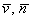

|
|
|
The systemic approach on the world implies, first of all, the structural hierarchy of the forms revealing all the constitutive elements of the world as we know it. A simple classification of these “systematization forms” depending on the complexity degrees of the elements which make-up the world is not a new endeavor, and it is not enough for understanding the causes of this hierarchy, that is the structure of the surrounding material systems and of the systems from whom even ourselves are made-up.
Our duty is to discover the most general laws which are the basis of this entirely systemic structure, laws which define both the formation of the natural systems and their decomposition.
The paper herein tries to present these possible laws and principles, which, if accepted, they allow us to understand our world in a way which is both nonconformist and coherent. The present work was written mainly for the readers with higher education, with basic knowledge in the special mathematics, and with a broad and interdisciplinary scientific background.
The objectual approach of the cognition according to the principles defined in this paper is meant to create a new scientific way of thinking, which, if it is used with discernment and competence, becomes a means able to provide a special analysis and prediction capacity. The work has a prevalent qualitative character, following that, many of the quantity aspects of the depicted objects and processes to be subsequently settled, after the moment when the qualitative principles have became a working method.
Due to the fact that the meaning given by the author to some terms is mostly different as compared to the meaning from the current natural language (even scientific language), some reserved words and expressions were introduced across the work contents, namely, some words or expressions (collocations) with a semantic value (meaning) which is invariant and context-free, value which is defined at the proper moment of the exposure. These words and expressions are also included in the list of reserved words which is found at the end of the paper, where there are hyperlinks to the definition of that particular word. The reader is warned that none of the terms which are considered as “tabu” by most of the scientists, such as, energy, force, pressure, field and many others, will not be neglected but they shall be redefined.
In order to increase the amount of information which is communicated to the reader by means of limiting the semantic field of a notion (notion area), the intersection of the semantic fields of some similar notions shall be used. The term whose meaning is desired to be restricted (defined) shall be followed by a list with similar notions, placed in brackets, and the common meaning of these notions is the meaning desired to be transmitted to the reader. For example, the expression motion (transfer, displacement) is used in order to communicate the common meaning of the three words (intersection of the semantic fields).
As for the notation which is used, the scalar quantities shall be written with italics (e.g: V, dM, t, so on), and the vector quantities shall be written with bold characters (e.g: v, f, so on) within the text, or overlined characters in some relations written with other editor (for example, ). The index of paragraphs, definitions, figures, comments and relations within the text are composed according to the following rule:
[section no]. [paragraph no].<subparagraph no>[current no]
where the brackets [] show a compulsory index and <>, an optional one.
The work is divided in two fluxes: the main flux, made-up from the succession of chapters 1…9, where the basic concepts and principles of the objectual philosophy are exposed (we may consider this part as the spinal cord of the work), and the secondary flux, made-up from a number of annexes, which are far from being less-significant, but they are either detailed explanations of the concepts from the main flux (which were taken-out from this stream for not distracting the reader’s attention too much), or the application of the principles of the present work under the re-interpretation of some objects or processes from the real or abstract world.
The additional explanations related to the text, required by some of the concepts or assertions, are structured on four levels of complexity: short explanations placed in brackets, footnotes, comments and (as mentioned above) annexes. The basic rule taken into account for drawing-up the text is that the neglecting of the additional explanations does not impair the paper coherence. In other words, if the text from brackets, footnotes and comments is not taken into consideration, the remaining one must be coherent, but it will depict only the minimum necessary information.
Copyright © 2006-2011 Aurel Rusu. All rights reserved.